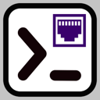

This is the SerialConsole support page. Please do report any issues or suggestions under Issues
To download, go to the macOS App store
This app is serial console (terminal) for the FTDI type serial adapters. It supports macOS and iPad (M-series only). To use or test, you need an FTDI hardware adapter plugged into your USB port.
Here is the SerialConsole privacy policy
I have created this App in my spare time, and I'm giving it away for free. I will do my best to respond to issues as my time allows.